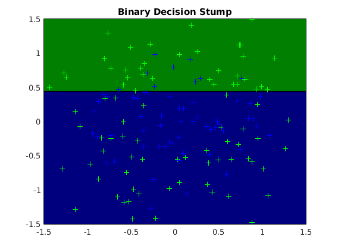
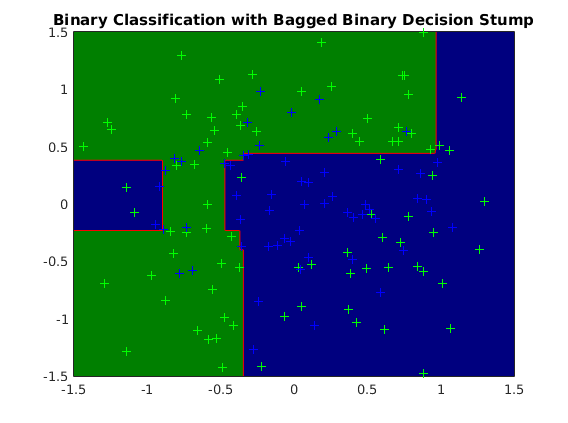
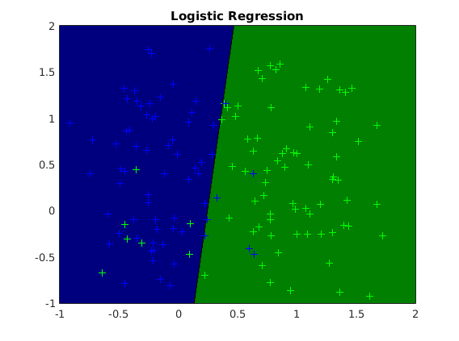
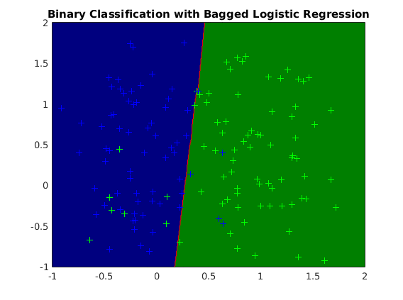

Contents
Description of demo_binaryclass_bagging.m
Demonstrates bootrap aggregation of stump and logistic regression classifiers on datasets with challenging class structure
clear all close all generateData_circular
usage of stump binary classification (circular dataset)
options_st = []; model_st = ml_binaryclass_stump(Xtrain, ytrain, options_st); yhat_st = model_st.predict(model_st, Xtest); testError_st = mean(yhat_st ~= ytest); fprintf('Averaged misclassification test error with %s is: %.3f\n', ... model_st.name, testError_st); figure; plot2DClassifier(Xtrain, ytrain, model_st);
Averaged misclassification test error with Binary Decision Stump is: 0.436
usage of stump binary classification with bagging (circular dataset)
options_bg.nModels = 20; options_bg.subModel = @ml_binaryclass_stump; model_bg = ml_binaryclass_bagging(Xtrain, ytrain, options_bg); yhat_bg = model_bg.predict(model_bg, Xtest); testError_bg = mean(yhat_bg ~= ytest); fprintf('Averaged misclassification test error with %s is: %.3f\n', ... model_bg.name, testError_bg) figure; plot2DClassifier(Xtrain, ytrain, model_bg); hold on; for k = 1:length(model_bg.trainModels); plot2DLine(model_bg.trainModels{k}); alpha(0) end plot2DClassifier_red(Xtrain, ytrain, model_bg); generateData_robustness
Averaged misclassification test error with Binary Classification with Bagged Binary Decision Stump is: 0.351
usage of logistic regression (robustness data)
options_lg = []; options_lg.addBias = 1; model_lg = ml_binaryclass_logistic(Xtrain, ytrain, options_lg); yhat_lg = model_lg.predict(model_lg, Xtest); testError_lg = mean(yhat_lg ~= ytest); fprintf('Averaged misclassification test error with %s is: %.3f\n', ... model_lg.name, testError_lg); figure; plot2DClassifier(Xtrain, ytrain, model_lg);
Averaged misclassification test error with Logistic Regression is: 0.120
usage of logistic regression with bagging (robustness data)
options_bg = []; options_bg.nModels = 20; options_bg.subModel = @ml_binaryclass_logistic; options_bg.subOptions.addBias = 1; model_bg = ml_binaryclass_bagging(Xtrain, ytrain, options_bg); yhat_bg = model_bg.predict(model_bg, Xtest); testError_bg = mean(yhat_bg ~= ytest); fprintf('Averaged misclassification test error with %s is: %.3f\n', ... model_bg.name, testError_bg) figure; plot2DClassifier(Xtrain, ytrain, model_bg); hold on; for k = 1:length(model_bg.trainModels); plot2DLine(model_bg.trainModels{k}); alpha(0) end plot2DClassifier_red(Xtrain, ytrain, model_bg);
Averaged misclassification test error with Binary Classification with Bagged Logistic Regression is: 0.133